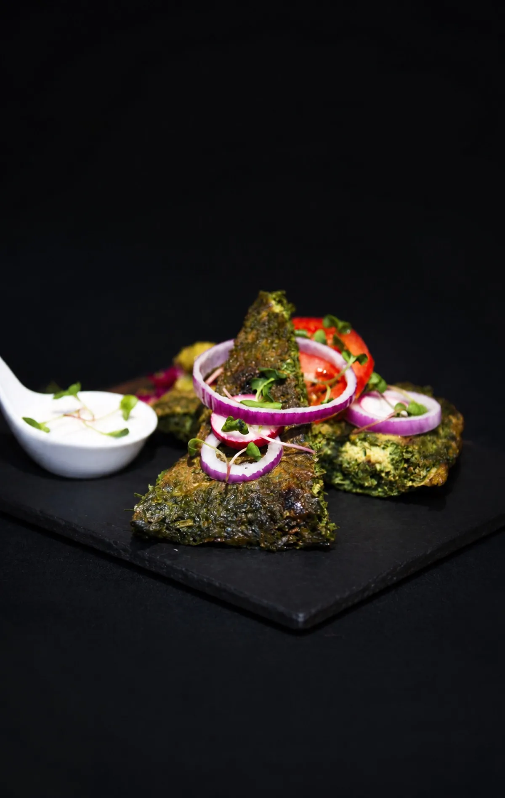
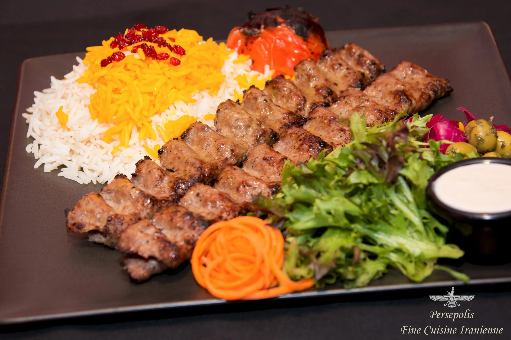
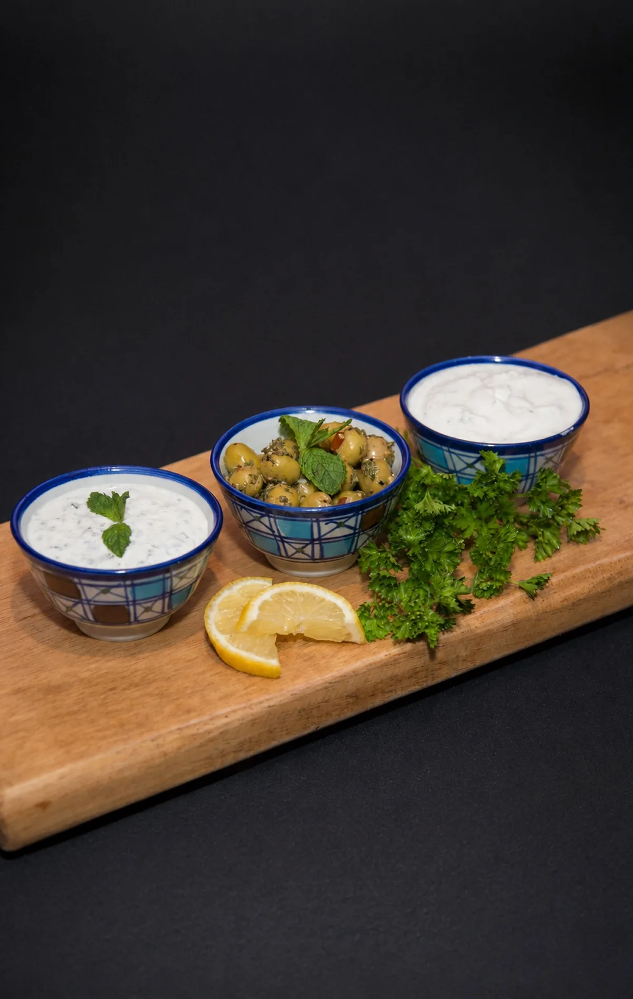
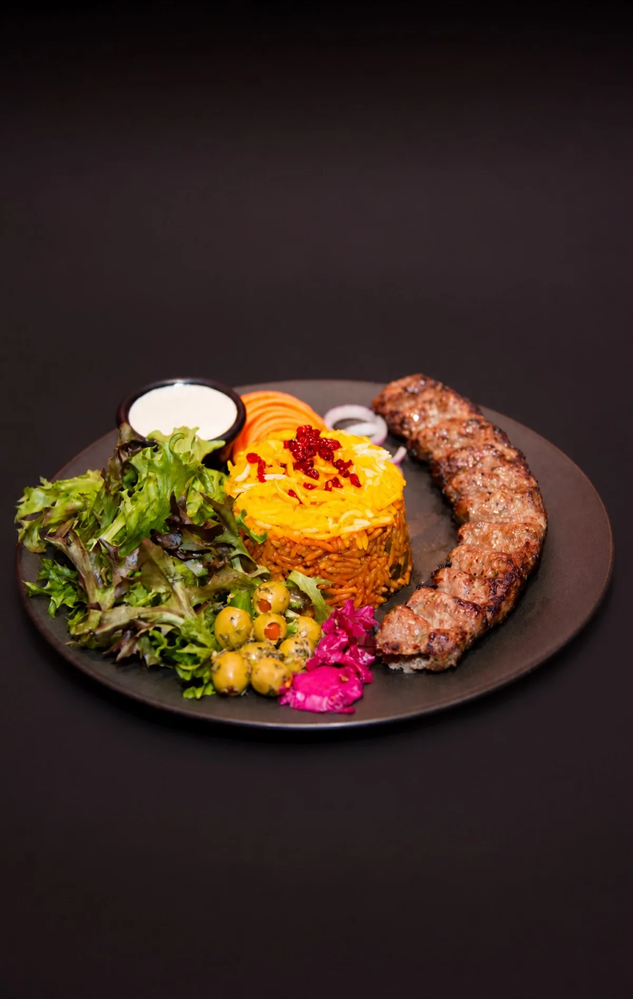
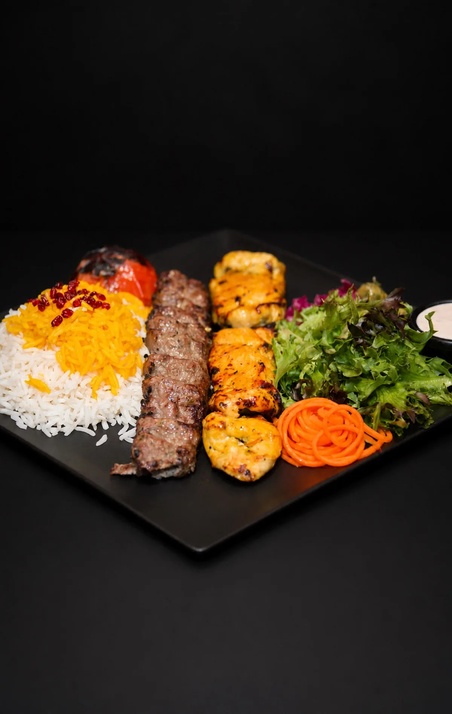
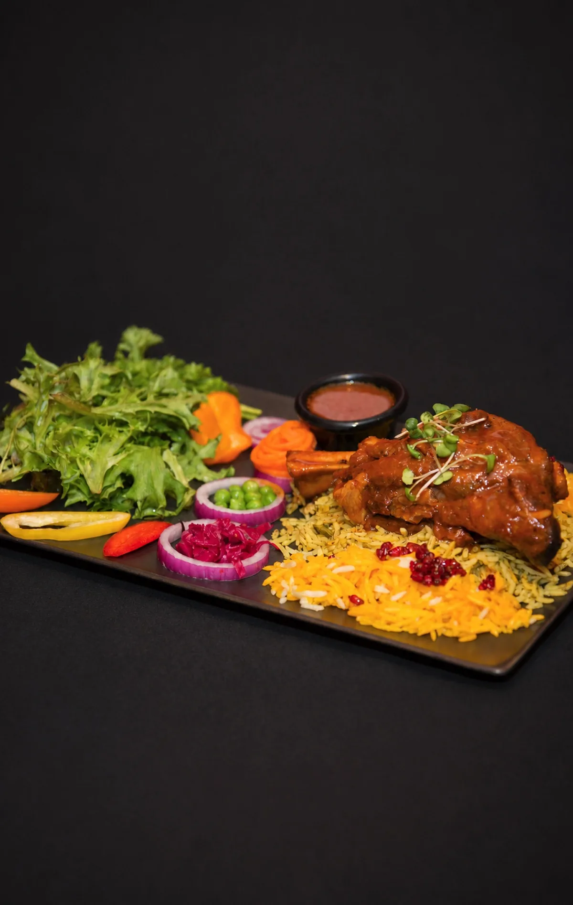
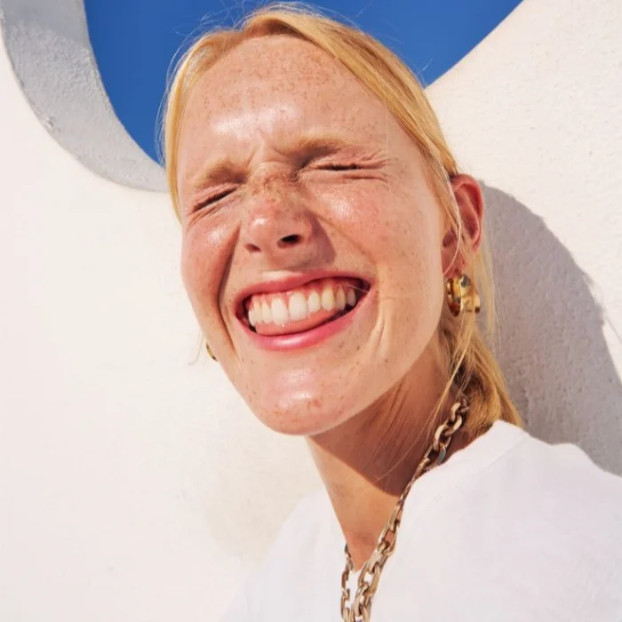

Kuku Sabzi
Galette persane aux fines herbes et épices, servie avec yogourt maison, tomate et oignon rouge.

Restaurant Persépolis · Sherbrooke
Une sélection de plats persans raffinés pour vos événements.
Livraison en supplément · commande 7 jours à l'avance.
À découvrir
Un aperçu de nos classiques les plus appréciés, préparés avec des épices persanes authentiques.

Galette persane aux fines herbes et épices, servie avec yogourt maison, tomate et oignon rouge.

Trempettes au yogourt maison, olives marinées aux herbes, citron frais et persil.

Brochette de bœuf haché mariné à l'oignon et au safran, riz basmati aux baies persanes.

Duo de brochettes juteuses — poitrine de poulet et bœuf haché — servi sur riz basmati.

Jarret d'agneau mijoté au safran, riz basmati à l'aneth et fèves vertes.
L'héritage perse, servi avec âme.
Toute commande de traiteur doit être passée au moins 7 jours à l'avance pour garantir la disponibilité des ingrédients et la fraîcheur des plats.
Des frais de livraison s'appliquent en supplément selon la distance et la taille de l'événement. Demandez une estimation lors de votre appel.
Allergies, préférences ou une occasion particulière ? Notre équipe personnalise chaque formule selon vos besoins.
Ils en parlent


« Un vrai voyage culinaire ! Le personnel est chaleureux et les saveurs très authentiques. Le koubideh était parfait. »
Sophie L.« Service de traiteur impeccable pour notre événement d'entreprise. Tout le monde a adoré, on réserve déjà pour l'an prochain. »
Marc-Antoine T.« Ambiance magnifique, plats délicieux et généreux. Parfait pour un souper en groupe entre amis. »
Camille R.★★★★★
« Un vrai voyage culinaire ! Le personnel est chaleureux et les saveurs très authentiques. Le koubideh était parfait. »
★★★★★
« Service de traiteur impeccable pour notre événement d'entreprise. Tout le monde a adoré, on réserve déjà pour l'an prochain. »
★★★★★
« Ambiance magnifique, plats délicieux et généreux. Parfait pour un souper en groupe entre amis. »
Chez nous
Un aperçu de notre salle et de nos assiettes.
Parlez-nous de votre événement — nous nous occupons du reste.